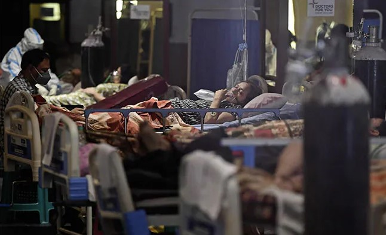

Sri Lanka economic crisis live: Sri Lanka police shoot protester dead
 Sri Lanka is grappling with unprecedented economic turmoil since independence from Britain in 1948. The crisis is caused inpart by a lack of foreign currency,
which has 3:03PM 4/21/2022 meant that the country cannot afford to pay for imports of staple foods and fuel, leading to acute shortages and very high prices.Sri Lanka police shot dead
one man and wounded 10 others on Tuesday in the first fatal clash with demonstrators protesting the island nation's crippling economic crisis.The island nation is in the grip of its most painful
economic downturn since independence in 1948, with severe shortages of essential goods such as fuel and regular blackouts causing
widespread misery READMORE...
Sri Lanka is grappling with unprecedented economic turmoil since independence from Britain in 1948. The crisis is caused inpart by a lack of foreign currency,
which has 3:03PM 4/21/2022 meant that the country cannot afford to pay for imports of staple foods and fuel, leading to acute shortages and very high prices.Sri Lanka police shot dead
one man and wounded 10 others on Tuesday in the first fatal clash with demonstrators protesting the island nation's crippling economic crisis.The island nation is in the grip of its most painful
economic downturn since independence in 1948, with severe shortages of essential goods such as fuel and regular blackouts causing
widespread misery READMORE...
Coronavirus LIVE Updates: India Logs Over 2,000 New Covid Cases In 24 Hours
 With 2,380 new coronavirus infections being reported in a day, India's total tally of COVID-19 cases rose to 4,30,49,974, while the active cases increased to 13,433, according to the Union Health Ministry data updated on Thursday.The number of deaths climbed to 5,22,062 with 56 fresh fatalities, the data updated at 8 am stated. The active cases comprise 0.03 per cent of the total infections, while the national COVID-19 recovery rate remained at 98.76 per cent, the ministry said. An increase of 1,093 cases has been recorded in the active COVID-19 caseload in a span of 24 hours.The daily positivity rate was recorded as 0.53 per cent and the weekly positivity rate as 0.43 per cent, according to the ministry.Click here for graph of latest covid-19 cases